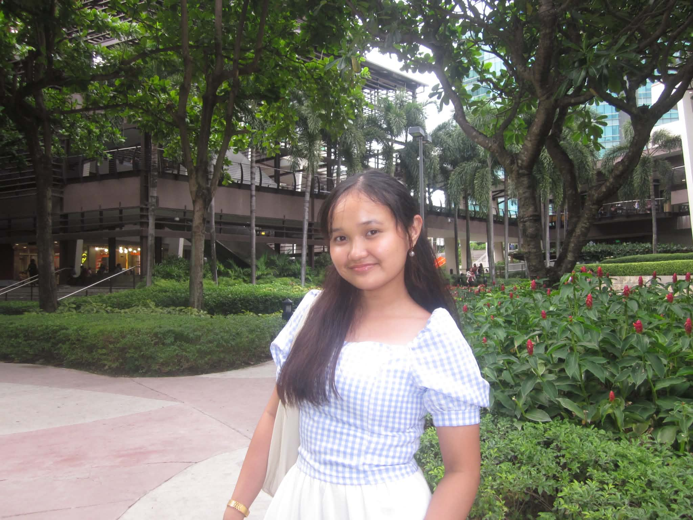
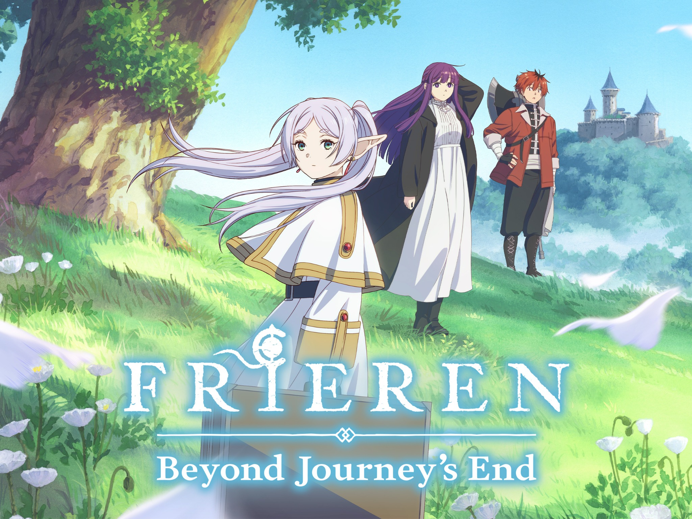
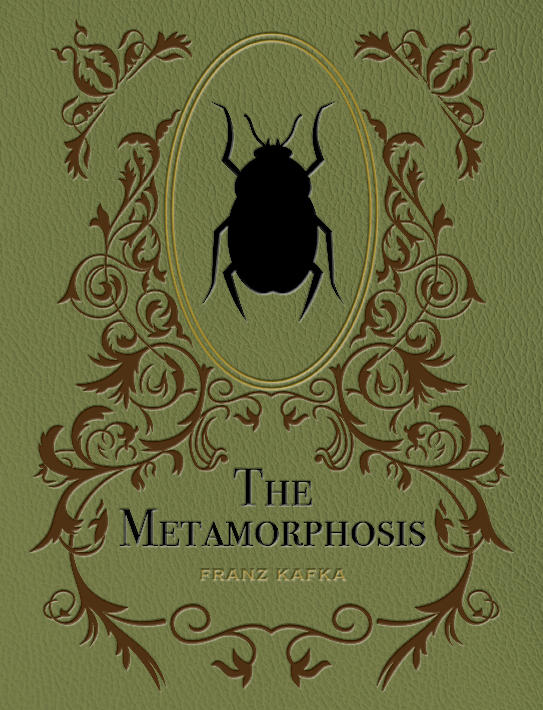
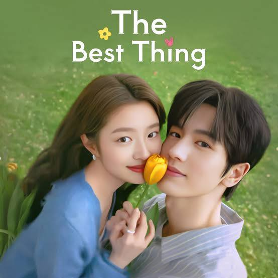

Reading
I enjoy reading manhwas and classic books. One of my favorites is The Metamorphosis by Franz Kafka.
GEC 124 · H78 · BS NURSING
A small collection of things that make me, me.
Hi! I'm Nicole L. Unggay. This is my little corner of the internet where I share the stories I love, the things that make me happy, and the dream I'm slowly working toward.
Begin the journey ✦A little about me
Some simple things about the person behind this little website.

My little corner of the journey 🌿
I am Nicole L. Unggay, a BS Nursing student from Section H78. I enjoy quiet moments, good stories, and discovering little things that make life meaningful.
My interests include watching movies, Korean and Chinese dramas, anime, reading manhwas and classic books, journaling, swimming, playing Roblox, and enjoying my alone time.
Little things I enjoy
Like little memories collected along a long journey, these are some of the things that make me happy.
I enjoy reading manhwas and classic books. One of my favorites is The Metamorphosis by Franz Kafka.
I like writing down thoughts, memories, ideas, and little moments I want to remember.
Swimming is something I enjoy when I want to relax, have fun, and take a break.
I enjoy movies as well as Korean dramas and Chinese dramas. Stories are one of my favorite ways to unwind.
Sometimes I like spending my free time playing Roblox and simply having fun.
I value quiet time by myself because it gives me space to rest and enjoy my own thoughts.
Stories close to my heart
A few stories that have found a little place in my heart.

I love its peaceful atmosphere, beautiful fantasy world, emotional storytelling, and its themes of memories, relationships, and the passage of time.
✦ ✧ ✦
Franz Kafka's The Metamorphosis is one of the classic books that stayed with me and made me think about its meaning after reading it.
✦ ✧ ✦
One of the C-dramas I really enjoyed watching. It is a sweet story that became one of my personal favorites and a drama I would happily recommend.
♡ ✦ ♡Looking ahead
“I want to be a nurse whose presence brings comfort, and someone patients can place their faith in.”
As I continue my journey in nursing, I hope to become someone whose presence brings comfort, understanding, and kindness. I want to care for patients in a way that helps them feel safe, heard, and supported, especially during the moments when they need someone they can trust the most.
Every journey begins with small steps.
🌙